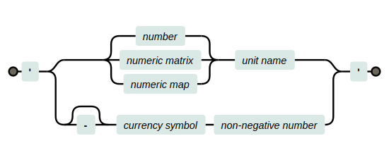

Hurmet Reference Manual
Introduction
Hurmet is a rich-text editor that gives you the ability to create high quality calculation documents using standard math notation.
Hurmet calculations are much easier to read and check than spreadsheet calculations. Hurmet does not hide the active expressions and intermediate values of a calculation. They’re all open for review in the displayed document.
You are welcome to use the Hurmet.app web page under terms of the MIT License. The source code is available in Hurmet’s GitHub repository.
Hurmet is in active development. You are free to use it, but be aware that there may be bugs and that I have plans for more features. As I add those features, it’s possible that some of the existing features may break.
Editor Basics
Hurmet provides rich-text editing capabilities. You can apply styles to a document range by selecting text, then clicking one of the menu bar buttons:
≡   ● ●     |
Document operations: Navigate…, Open file…, Save file…, Set decimal format, Draft mode, Recalculate all, Create print header, Print… |
  |
Editing: Undo, Redo |
B I  X2 X2 X2 X2  U U |
Character styles: Bold, Italic, Code, Subscript, Superscript, Strikethrough, Underline |
 — —     |
Insert: Link…, Horizontal rule, Uploaded image…, Link to image…, Hurmet calculation…, TeX… |
¶ H1 H2     |
Block styles: Plain paragraph, Code block, Headings, Indent, Non-printing paragraph, List, Ordered list, Block quote |
          Tbl Style Tbl Style |
Table: Insert table, Insert row, Insert column, Delete table, Delete row, Delete column, Toggle cell merge, Align left, Align center, Align right, Set table style |
 |
Information |
Hurmet’s foremost feature is its calculation cells. The rest of this document is about them. But first note that Hurmet also has cells that emulate the math mode of \TeX. These cells display, but do not calculate, math. You can insert a TeX cell by clicking the button. Type Shift-Enter to save the cell.
For more information about TeX and LaTeX, good places to start are the Wikibooks pages for writing math and advanced math; and the KaTeX home page and supported-functions page.
Hurmet calculation cells use a different syntax than TeX. In calculation cells, the syntax is more akin to a programming language, yet it renders like mathematics.
Tutorial
- Create a cell
-
Hurmet calculation cells display math and perform numeric calculations. To create a calculation cell in Hurmet.app, select a spot in the document, then click the
button or type Alt c. Save the cell by hitting the Shift-Enter keys. You can escape any changes by hitting the Esc key or by clicking elsewhere in the document.The demonstration box to the lower-left mimics a Hurmet.app calculation cell. It can do one calculation at a time. Use it to practice the material in this tutorial.
- Statements
Inside a calculation cell, we can write an statement and get a numeric result. In the demonstration box to the lower-left, try replacing the text with
2 + 2 = ?. Hurmet will render the math and write the result where you place the?mark.- Numbers
Numbers can be written as integers (33), decimals (2.45), or mixed fractions (3 ⁷⁄₈). There is a more detailed description below.
- Arithmetic
The symbols:
+ - × / ^ √are some of Hurmet’s arithmetic operators. Try an equation such as22 + 3^2/7 = ?. Play with changes to the values and operators to see how they work. See here for more operators.- Multiplication
-
Hurmet accepts several multiplication syntaxes. If a = 7.1, then the following all give the same result:
2 × 7.1
2 * 7.1
2 ⋅ 7.1
2 \, a
(2)(7.1)To obtain the character ×, type xx and hit the space bar. Auto-correct will give you an ×.
A space between variables acts as a multiplication operator.
- Roots
Type
sqrtand hit the spacebar to auto-correct into \sqrt{~}root 3androot 4will also auto-correct into roots.- Function
Hurmet treats a word as a function name if it is placed directly before an open parenthesis. Example: \sin\left(\frac{π}{6}\right)= 0.5. Hurmet has many built-in functions.
- Variables
-
L = 3.1 ← That kind of statement will assign a value to a variable. Subsequent cells can then use the variable.
Example:2 L = ?will result in: 2 \, L = \color{blue}(2)(3.1)\color{black}= 6.2A variable name must be a valid identifier.
An assignment statement can also contain a calculation expression. Example:
b = 2 L = ?will result in b = 2 \, L = \color{blue}(2)(3.1)\color{black}= 6.2 - Subscripts
An underscore signals the beginning of a subscript. Examples:
x_leftandy_(i+1)result in x_\mathrm{left} and y_{i + 1}.- Greek letters
To write a Greek letter, write the name of the letter and hit the space bar. So,
alpha↦ α andbeta↦ β. More detail here.- Accents and Primes
-
To write an accent above a single-letter variable, write the accent name and hit the space bar for an auto-correction. Examples:
y bar↦ \bar{y}θ hat↦ \hat{θ}P vec↦ \vec{P}x dot↦ \dot{x}More detail here.
To write a prime, type two apostrophes (aka single quotation marks) and hit the space bar. So,
f''will result in f' - Quantities
A Hurmet quantity contains both a magnitude and a unit of measure. Write a quantity between two single quotation marks, like this:
'3.1 m'- Unit-Aware Calcs
-
Hurmet can automatically handle unit conversions of quantities. To call for a unit-aware calculations, write
??instead of?where you want the result to appear.
Example:2 × '2 m' = ?? ftresults in 2 × (2\; {\text{m}})= 13.1233595800525 \, \,\mathrm{ft}.This is covered in more detail below.
Quick Reference
Markup
| Input | Renders as: | Input | Renders or calculates as: |
|---|---|---|---|
12/25.2 |
\dfrac{12}{25.2} | x |
x |
(a + b)/c |
\dfrac{a + b}{c} | longVarName |
\mathrm{longVarName} |
a//b |
\frac{a}{b} | "A string." |
\text{A string.} |
a///b |
a / b | '5 N.m/s2' |
5\; {\text{N}\mkern1mu{\cdot}\mkern1mu\text{m/s}^{2}} |
x^23 |
x^{23} | (a, b; c, d) |
\begin{pmatrix}a & b \\ c & d \end{pmatrix} |
x^(a+b) |
x^{a + b} | [a, b; c, d] |
\begin{bmatrix}a & b \\ c & d \end{bmatrix} |
x_subscript |
x_\mathrm{subscript} | [1:4] |
\begin{bmatrix}1 & 2 & 3 & 4 \end{bmatrix} |
x_(a+b) |
x_{a + b} | [1:2:5] |
\begin{bmatrix}1 & 3 & 5 \end{bmatrix} |
x′ |
x' | {"w": 24, "h": 30} |
\{\text{w}:24 ,\: \text{h}:30 \} |
A-->note B |
A \xrightarrow{\mathrm{note}}B | |x| ‖x‖ |
\lvert x \rvert \lVert x \rVert |
\red("ng") |
\red{\text{ng}} | {a if b;c otherwise} |
\begin{cases}a &\mathrel{\mathrm{if}}b \\ c &\mathrel{\mathrm{otherwise}}\end{cases} |
Calculation cells also support many of the math-mode TeX functions supported by KaTeX. Put function arguments between parentheses, not braces, as in \cancel(5) instead of \cancel{5}.
TeX functions are provided for use in displaying math. Not all of them are valid in calculations.
A few color functions are valid in calculations, but only if their argument is a string. These are: \blue, \gray, \green, \orange, \pink, \purple, and \red.
Auto-correct
Auto-correct kicks in when you type a space.
| Type | Get | Type | Get | Type | Get | Type | Get | Type | Get |
|---|---|---|---|---|---|---|---|---|---|
/// |
∕ | xx | × | sqrt | √ | Gamma | Γ | alpha | α |
<= |
≤ | . | · | root 3 | ∛ | Delta | Δ | beta | β |
>= |
≥ | ' ' | ′ | x^2 | x² | Theta | Θ | gamma | γ |
!= |
≠ | " " | ʺ | bb M | 𝐌 | Lambda | Λ | delta | δ |
<> |
≠ | oo | ∞ | bbb E | 𝔼 | Xi | Ξ | epsilon | ε |
| ~= | ≅ | ooo | ° | cc P | \mathcal{P} | Pi | Π | zeta | ζ |
| ~~ | ≈ | ii | \sqrt{\text{-}1} | ff f | 𝖿 | Sigma | Σ | eta | η |
| \in | ∈ | << |
⟨ | y bar | y̅ | Phi | Φ | theta | θ |
| \notin | ∉ | >> |
⟩ | θ hat | \hat{θ} | Psi | Ψ | iota | ι |
| -= | ≡ | ^^ | ∧ | P vec | \vec{P} | Omega | Ω | kappa | κ |
| := | ≔ | vv | ∨ | P harpoon | \overrightharpoon{P} | AA | ∀ | lambda | λ |
| -: | ÷ | vvv | ⋁ | a dot | ȧ | EE | ∃ | mu | μ |
| +- | ± | nn | ∩ | a ddot | ä | CC | ℂ | nu | ν |
| -+ | ∓ | nnn | ⋂ | a grave | à | HH | ℍ | xi | ξ |
-> |
→ | uu | ∪ | a acute | á | NN | ℕ | pi | π |
<- |
← | uuu | ⋃ | a tilde | ã | OO | O ︀ | rho | ρ |
<-> |
↔ | \ceil | ⎾⏋ | a ring | å | ℚ | sigma | σ | |
=> |
⇒ | \floor | ⎿⏌ | \checkmark | ✓ | RR | ℝ | tau | τ |
| \circ | ∘ | \not | ¬ | ZZ | ℤ | upsilon | υ | ||
| \| | ¦ | \xor | ⊻ | \hbar | ℏ | phi | ϕ | ||
| || | ‖ | \sum | ∑ | \ell | ℓ | chi | χ | ||
| /_ | ∠ | \int | ∫ | \euro | € | psi | ψ | ||
| \iint | ∬ | \yen | ¥ | omega | ω |
The font corrections, e.g., bb … work on any letter from A to Z or a to z.
-->, <--, and <--> will auto correct into extensible arrows, as in: A \xrightarrow{\text{note}}B.
\<space> auto-corrects to ˽ in the text editor, which renders as a space.
Display Selectors
| Display selector | Display Selector for Unit-Aware Calculation | Displays: |
|---|---|---|
| ? | ?? | Entire calculation, including a blue echo of the expression displaying the value plugged in to each variable. |
| ! | !! | Calculates and holds, but does not display, the blue echo or the result. |
| % | %% | Omits blue echo. |
| @ | @@ | Displays only the result, like a spreadsheet cell. |
Calculation Forms
Hurmet calculation cells don’t just display math; they compute numerical results.
It’s quite simple to assign a value to a variable:
| Form | Examples |
|---|---|
 |
x = 5 |
L = '5 meters' | |
name = "James" |
To calulate an expression that contains a variable, a function, or an operator; write a ? or % or @ to indicate where the result should appear. Here are some examples:
| Input | Renders as: |
|---|---|
2 + 2 = ? |
2 + 2 = 4 |
2 + 2 = @ |
4 |
A = 2 × 4 = ? |
A = 2 × 4 = 8 |
x = 2 A = ? |
x = 2 \, A = \color{blue}(2)(8)\color{black}= 16 |
x = 2 A = % |
x = 2 \, A = 16 |
A = '2 m' × '4 feet' = ?? m² |
A = 2\; {\text{m}}× (4\; {\text{feet}})= 2.4384\; {\text{m}^{2}} |
The expression form is more precisely defined as:

At the beginning of the statement, you can write an optional variable name. The result of the calculation will be assigned to that variable. Expressions later in the document can call the variable. Variable names must qualify as valid identifiers. They are case-sensitive and bold-sensitive. A search for variable E will not find e. A search for M will not find M.
You can define a unit for the result with a leading currency symbol or a trailing unit name, but not both in the same statement.
Display Selector
Near the end of the statement is the display selector, i.e., ?, ??, etc. It determines how much of the calculation is displayed.
| Display selector | Display Selector for Unit-Aware Calculation | Displays: |
|---|---|---|
| ? | ?? | Entire calculation, including a blue echo of the expression that displays the value plugged in to each variable. |
| ! | !! | Calculates and holds, but does not display, the blue echo or the result. |
| % | %% | Omits blue echo. |
| @ | @@ | Displays only the result, like a spreadsheet cell. |
For an engineer like me, the most common display selector is ??. I almost always want to see the entire calculation. Seeing the expression and the plugged-in values helps me to avoid the kind of unseen errors that creep into spreadsheet calculations. And it makes the calculation reviewable by a second set of eyes.
A doubled selector will prompt a unit-aware calculation. After you try them, you may wonder how you ever did without them.
I use the ! selector mostly when I am assigning a chunk of data to a variable.
I try to resist the temptation to overuse the % selector. When I review work done by another engineer, I can do without the blue echo if variable values are assigned directly above the equation where they are used. Otherwise I get grumpy. You don’t want a grumpy reviewer.
One last variation is possible when assigning values from a dictionary. You can assign such values to more than one variable at a time, like this:
A, I, w_self = beam["A", "Ix", "weight"] = !!Multiple assignment statements must suppress the result display.
Identifiers
Variable names and function names must be written in the form of a valid identifier.
- Identifiers may be multiple characters long.
- The first character must be a letter from the Latin or Greek alphabet. It may be bold or capitalized calligraphic Latin, or ℏ, or ℓ.
- Subsequent characters may be letters or numerals (0123456789).
- An under-score within an identifier is allowed and will be interpreted to mean the start of a subscript.
- If an identifier has only one letter, then an accent character may be written after it. Hurmet will render the accent above the letter, as in \hat{θ}.
- Primes may be appended to the very end, as in: f_\mathrm{c}'.
- The following keywords may not be used as variable names:
π,ℏ,true,false,root,if,otherwise,and,or,modulo,in,to.

The names of those accents are:
| grave | acute | hat | tilde |
| bar | breve | dot | ddot |
| ring | check | ul | leftharpoon |
| harpoon | leftvec | vec | leftrightvec |
Hurmet’s auto-correct can help create identifiers.
| To create: | … do this and hit the space bar | Example input | Example result |
|---|---|---|---|
| Greek letter | Type the name of the letter. | gamma | γ |
| Capital Greek letter | Capitalize the name’s first letter. | Gamma | Γ |
| Bold letter | Type “bb”, then space, then the desired letter. | bb M | 𝐌 |
| Calligraphic capital letter | Type “cc”, then space, then the desired letter. | cc P | 𝒫 |
| Accent | Type the name of the accent. | y bar | \bar{y} |
| Prime | Type two apostrophes. | '' | ′ |
Hurmet will render single Latin letter variable names in italic. Function names and multi-letter variable names are rendered in upright font. As a convention, I personally use bold letters for variables that contain vectors or matrices.
Data Types
- Boolean
trueorfalse- String
-
A _string_ literal is a string of text characters enclosed by a pair of straight double quotation marks. The string may include any Unicode character except a straight double quotation mark.
"This is a string."You can call a subset of any string with an index or range in brackets. Hurmet indices are one-based. Examples:
a = "abcdefg" a[2] ## returns "b" a[2:4] ## returns "bcd" a[5:] ## returns "efg" - Number
-
Enter as integers (33), decimals (2.45), scientific notation (3.1e4), or mixed fractions (3 ⁷⁄₈).

Notice that a number literal must begin and end with a numeral, not a decimal symbol. Hurmet will not recognize
5.as a number.Hurmet’s default decimal symbol is a dot. You can choose instead to enter numbers with a decimal comma via a drop-down menu labeled “●”. Numbers are never entered with a thousands separator, but they can be displayed with one. The ● menu also controls that display.
Hurmet always saves a decimal symbol as a dot. It’s only the display that changes.
While calculations are underway, Hurmet holds every number in memory in rational number format. The numerator and denominator are each integers of arbitrary length. So Hurmet can work precisely with numbers like 0.1 and 0¹⁄₃. Trignonometry and roots are done in double-precision floating point, good to about 15 significant digits.
- Quantity
-
A Hurmet quantity contains both a numeric magnitude and a unit of measure. Quantity literals are written between apostrophes, aka single straight quotation marks. Examples:
Input Renders as '4.2 meters'4.2\; {\text{meters}} '-$25.10'\text{-}\$25.10 '30°'30 {\text{°}} '10 N·m/s'10\; {\text{N}\mkern1mu{\cdot}\mkern1mu\text{m/s}} '[2.1; 15.3] feet'\begin{bmatrix}2.1 \\ 15.3 \end{bmatrix}\; {\text{feet}} 
Quantities are useful in unit-aware calculations which do automatic unit conversion and also check for unit compatibility.
Hurmet has many built-in unit definitions. You can write any one of them into a quantity. SI (metric) prefixes are valid on the appropriate unit names.
You can also create compound units on the fly. That is, you can raise any unit to a power, and these powers-of-units can be multiplied (or divided) together into products. Example:
Input Renders as '4 kW.hr/m2'4\; {\text{kW}\mkern1mu{\cdot}\mkern1mu\text{hr/m}^{2}} Note that within the quantity literal, it is not necessary to write
^to indicate a numeric exponent. Also, a dot or a hyphen within a compound unit name will be rendered as a half-high dot.Only one division solidus, /, may be written into a compound unit.
- Matrix
-
A Hurmet matrix is a one or two dimensional arrangement of matrix elements. A Hurmet matrix element can be a number, a string,
true,false, or an exprression that resolves to one of those simple types.A Hurmet vector is a one dimensional matrix, either a row vector or a column vector.
A matrix literal is written between delimiters, either
( )or[ ]. Matrix elements are separated by commas. Matrix rows are separated by semi-colons. Be sure to write a space after comma separators so they are not confused with decimals inside a number. Here are some matrix examples:Input Renders as (1, 0; 0, 1)\begin{pmatrix}1 & 0 \\ 0 & 1 \end{pmatrix} [2.1; -15.3]\begin{bmatrix}2.1 \\ \text{-}15.3 \end{bmatrix} Another way to create a Hurmet vector is to write a range of numbers between brackets; the form is
[start:step:end]. A Hurmet calculation of that form will return a row vector with every number in the range. The step size is optional (default = 1). Examples:Input Result [2:5] = ?[2 :5]= \begin{bmatrix}2 & 3 & 4 & 5 \end{bmatrix} [1:2:5] = ?[1 :2 :5]= \begin{bmatrix}1 & 3 & 5 \end{bmatrix} You can call individual elements with index integers between brackets, as in
𝐕[5]or𝐌[1, 3]. You can use a variable name for the index if the variable returns an integer.You can access a sub-matrix using the range operator, “:”, as in
𝐌[2:5, 1]. Entire rows or columns can be called by omitting an index, as in𝐌[2,]or𝐌[,1]. Hurmet indexes are one-based. - Matrix Operations
-
All the usual math operators can be applied to a numeric matrix. The operators mostly work in an element-wise fashion. If you add a scalar to a matrix, or pass a matrix to most functions, Hurmet will do an element-by-element calculation and return a matrix, as in:
𝐡 = \begin{bmatrix}5 \\ 10 \\ 15 \end{bmatrix}
𝐱 = 2 \, 𝐡 + 1 = \color{blue}2 \begin{bmatrix}5 \\ 10 \\ 15 \end{bmatrix}+ 1 \color{black}= \begin{bmatrix}11 \\ 21 \\ 31 \end{bmatrix}
Spreadsheet calculations can often be replaced by calulations using vectors, as above. When you really need to get things right, it’s great to be able to see the expression and all the plugged-in values.
Multiplication of two matrices is different than other operations. Mathematicians have several ways to multiply matrices. In Hurmet, you choose the type of multiplication by your choice of multiplication operator:
𝐀 * 𝐁 ↦ element-wise product, (𝐀 * 𝐁)_{\mathrm{ij}}= \mathrm{𝐀_\mathrm{ij}} × \mathrm{𝐁_\mathrm{ij}}
𝐀 𝐁 ↦ matrix product, (𝐀 𝐁)_{\mathrm{ij}}= ∑_{k = 1}^{m} \,\mathrm{𝐀_\mathrm{i}} \,\mathrm{𝐁_\mathrm{kj}}
𝐀 × 𝐁 ↦ cross product of a pair of three-vectors
= \lvert 𝐀 \rVert 𝐁 \lvert \sin(θ) 𝐧 \rvert𝐀 ⋅ 𝐁 ↦ dot product = ∑_{i = 1}^{n} (\mathrm{𝐀_\mathrm{i}} \, \,\mathrm{𝐁_\mathrm{i}})
Here are more of Hurmet’s matrix operations:
𝐀^{T} ↦ a transposed matrix.
𝐀^{\text{-}1} ↦ an inverted matrix, if 𝐀 is square.
\lvert 𝐀 \rvert ↦ \begin{cases}\mathrm{determinant} &\mathrel{\mathrm{if}}\text{𝐀 is square}\\ \mathrm{magnitude} &\mathrel{\mathrm{otherwise}}\end{cases}
\operatorname{abs}(𝐀) ↦ element-wise absolute values
\lVert 𝐀 \rVert ↦ \begin{cases}\sqrt{x_\mathrm{1}^{2}+ ⋯ + x_\mathrm{n}^{2}}&\mathrel{\mathrm{if}}\text{𝐀 is a vector}\\ \sqrt{∑_{i}∑_{j} A_\mathrm{ij}^{2}}&\mathrel{\mathrm{if}}\text{𝐀 is a matrix}\end{cases}
Functions will mostly work element-wise on an matrix. Exception: functions
min()andmax()will find the minimum or maximum of the elements in the matrix.If you want to write a comma or a semi-colon inside parentheses and not create an matrix, use
\,or\;. - Dictionary
-
A dictionary is a data structure in which you can store values and access each one with a unique name. Put another way, a dictionary is a collection of key:value pairs.
Dictionary literals are written between
{ }delimiters. Each key must be a string, i.e., between double quotation marks. Keys are separated from values by a colon and key:value pairs are separated from each other by commas or semi-colons (but not both commas and semi-colons in the same dictionary).Example:
barArea = {"#4": 0.22, "#5": 0.31}A value may be any Hurmet data type except a data frame or a nested dictionary.
Besides a dictionary literal, the other, possibly more common, way to create a dictionary is to call one row of a data frame.
Call individual values from a dictionary with a key in brackets, as in
A = barArea["#3"]. This notation also enables one to use a variable name for the key. Or, if the key qualifies as a valid identifier, you can use dot notation, as inW8X31.weightYou can assign multiple values from a dictionary in one statement using bracket notation, like this:
A, I, w_self = W8X31["A", "Ix", "weight"] = !!Multiple assignment statements must have the result display suppressed.
- Map
-
A Hurmet map is a dictionary in which every value is the same data type and, if numeric, carries the same unit-of-measure. Maps can be the numeric part of a quantity.
barArea = '{"#4": 0.22, "#5": 0.31} in2'You can do arithmetic on maps and run them through functions. The operation will be done on each value in the map. For instance, a beam calculation can break the loads down into dead load, live load, snow load, etc.:
w = \begin{Bmatrix}\text{D}:20 \\ \text{L}:40 \\ \text{S}:30 \end{Bmatrix}\; {\text{lbf/ft}} L = 12\; {\text{ft}}
M = \frac{1}{8}\, w L^{2}= \color{blue}\dfrac{1}{8}\, \left(\begin{Bmatrix}\text{D}:20 \\ \text{L}:40 \\ \text{S}:30 \end{Bmatrix}\; {\text{lbf/ft}}\right)(12\; {\text{ft}})^{2}\color{black}= \{\text{D}:0.54 ,\: \text{L}:0.72 ,\: \text{S}:0.36 \}\; {\text{k}\mkern1mu{\cdot}\mkern1mu\text{ft}}
Dictionaries with values of varying units-of-measure can be multiplied by a unit-less scalar. No other math operations are supported for non-map dictionaries.
- Data Frame
-
A data frame is a two dimensional data structure that can be accessed with row names and column names or by row indices and column indices.
Each datum can be a number, a string,
true, orfalse. A missing item will be taken to beundefined. All data in a column must be of the same data type. A column of numbers can be assigned a unit of measure.Data frame literals are written between backtick
` `delimiters. The text between the backticks must be written in CSV format. Numbers must use a dot decimal. The second row will define units of measure if “unit” is the first word of the second row. The first column will be indexed if the first word is “name” or “index”.Here’s an example of CSV input:
rebar = `name,diameter,area unit,in ,in² #3,0.375,0.11 #4,0.5 ,0.2 #5,0.625,0.31 #6,0.75 ,0.44`… which renders as:
\mathrm{rebar} = \begin{array}{l|c c}\text{name}&\mathrm{diameter}&\mathrm{area} \\ &{\text{in}}&{\text{in}^{2}} \\ \hline\text{\#3}&0.375 &0.11 \\ \text{\#4}&0.5 &0.2 \\ \text{\#5}&0.625 &0.31 \\ \text{\#6}&0.75 &0.44\end{array}
Data frames can be quite large, so Hurmet gives you two ways to define them inconspicuously:
- A variable that contains a data frame can be called before it is defined. So you can make that assignment at the end of a document.
- The
fetch(url)function is available to load data from a remote CSV file into a data frame. Since Hurmet runs in a browser, the url must begin withhttp:orhttps:
A fetch example:
wideFlanges = fetch("https://hurmet.app/data/example.csv") = !That example loads in this data:
\begin{array}{l|c c c c c c c c c c}\text{name}&\mathrm{weight}&\mathrm{area}&d&\mathrm{bf}&\mathrm{tw}&\mathrm{tf}&\mathrm{Ix}&\mathrm{Sx}&\mathrm{Iy}&\mathrm{Sy} \\ \;&{\text{lbf/ft}}&{\text{in}^{2}}&{\text{in}}&{\text{in}}&{\text{in}}&{\text{in}}&{\text{in}^{4}}&{\text{in}^{3}}&{\text{in}^{4}}&{\text{in}^{3}} \\ \hline\text{W14X90}&90 &26.5 &14 &14.5 &0.44 &0.71 &999 &143 &362 &49.9 \\ \text{W12X65}&65 &19.1 &12.1 &12 &0.39 &0.605 &533 &87.9 &174 &29.1 \\ \text{W10X49}&49 &14.4 &10 &10 &0.34 &0.56 &272 &54.6 &93.4 &18.7 \\ \text{W8X31}&31 &9.13 &8 &8 &0.285 &0.435 &110 &27.5 &37.1 &9.27 \\ \text{W8X18}&18 &5.26 &8.14 &5.25 &0.23 &0.33 &61.9 &15.2 &7.97 &3.04 \\ \text{W6X15}&15 &4.43 &5.99 &5.99 &0.23 &0.26 &29.1 &9.72 &9.32 &3.11 \\ \text{W4X13}&13 &3.83 &4.16 &4.06 &0.28 &0.345 &11.3 &5.46 &3.86 &1.9\end{array}
As data frames go, that example is still pretty small. When I assign a data frame to a variable, I usually suppress its display by using the ! display selector.
You can call a row or a column with single index. You can call a single cell or a range of cells with a pair of indices within brackets. The index can be either a number or a string. Examples:
This call: … will return: wideFlanges["W10X49", "area"]14.4\; {\text{in}^{2}} wideFlanges.W10X49.area14.4\; {\text{in}^{2}} wideFlanges["W10X49"]["area"]14.4\; {\text{in}^{2}} wideFlanges["W10X49", 1:2]\{\text{name}:\text{W10X49},\: \text{weight}:49\; {\text{lbf/ft}}\} wideFlanges["W10X49", ["area", "weight"]]\{\text{area}:14.4\; {\text{in}^{2}},\: \text{weight}:49\; {\text{lbf/ft}}\} wideFlanges.W10X49["area", "weight"]\{\text{area}:14.4\; {\text{in}^{2}},\: \text{weight}:49\; {\text{lbf/ft}}\} wideFlanges["W10X49"]["area", "weight"]\{\text{area}:14.4\; {\text{in}^{2}},\: \text{weight}:49\; {\text{lbf/ft}}\} wideFlanges[1:2, "area"]\begin{bmatrix}26.5 \\ 19.1 \end{bmatrix} wideFlanges[["W8X31"; "W10X49"], "area"]\begin{bmatrix}0.13 \\ 14.4 \end{bmatrix} Hurmet will return a
\begin{cases}\text{simple type}&\mathrel{\mathrm{if}}\text{you call a single cell, as in df[1, 2]}\\ \text{column vector}&\mathrel{\mathrm{if}}\text{you call a column, as in df[,2]}\\ \text{dictionary}&\mathrel{\mathrm{if}}\text{you call a row, as in df[3,]}\\ \text{data frame}&\mathrel{\mathrm{otherwise}}\end{cases}You can also use dot notation to call a row, as in
wideFlanges.W10X49Similar to a dictionary, a call to a data frame can return multiple values. As in:
A, S_x = wideFlanges.W8X31["area", "Sx"] = !!, or
A, S_x = wideFlanges["W8X31"]["area", "Sx"] = !!, or
A, S_x = wideFlanges["W10X49", ["area", "Sx"]] = !!
Multiple returns must use the!!display selector, for now.
Expressions
Hurmet calculations are meant to be recognizeable to anyone familiar with standard math notation. That is a broad statement. Here are many nuances:
Constants
- π
If you write π into an expression, Hurmet uses a value of 3.14159265358979323846264338327950288419716939937510582097494.
- e
Hurmet will treat e just like any other variable most of the time. But if e is the base of an exponent, for example: e^{x}, then Hurmet will perform the function \exp(x).
- ℏ
For ℏ, Hurmet uses a value of 1.054571817 × 10⁻³⁴ J·s.
Operators
| Operator | auto correct |
Example | Description |
|---|---|---|---|
| = | x = 15 | Assign a value to a variable. | |
| = | \mathrel{\mathrm{if}}x = 15 | Equality test if in a comparison position. That is, “=” tests for equality if there is something other than a identifier to the left of it or a display selector to the right of it. |
|
| + | 2 + 2 | Addition | |
| – | 5 - 3 | Subtraction | |
| - | \text{-}4 | Unary minus | |
| * | 2 * 4 | Multiplication of numbers. Element-wise product of matrices. |
|
| × | xx | 2 × 4 | Multiplication of numbers. Cross product of three-vectors. |
| · | . | a ⋅ b | Multiplication of numbers. Dot product of matrices. |
| (2)(4) | Multiplication | ||
a b |
Multiplication. (A space acts as an operator when between variables.) | ||
| 2 \, a | Multiplication | ||
| \mathrm{a2} | Not a multiplication if no space. Hurmet reads “a2” as an identifier. |
||
| \sin(2) | Function | ||
| a (2) | Multiplication if a space exists before the open paren. | ||
| / | \dfrac{8}{2} | Division | |
| // | \frac{8}{2} | Case fraction | |
| /// | 8 / 2 | Division displayed inline | |
| ÷ | -: | 8 ÷ 2 | Inline division |
| ^ | 3^{2} | Exponent | |
| & | Concatenate strings or vectors, or concatenate numbers onto vectors | ||
| √ | sqrt | \sqrt{4} | Square root |
| \sqrt[3]{} | root n | \sqrt[3]{8} | nth-root |
| | | | \lvert \text{-}4 \rvert | Absolute value of a scalar, determinant of a matrix, or magnitude of a vector. | |
| || || | \ \Vert x \ \Vert | \sqrt{x_\mathrm{1}^{2}+ ⋯ + x_\mathrm{n}^{2}} if the argument is a vector of reals | |
| || || | \ \Vert x \ \Vert | \sqrt{∑_{i}∑_{j} A_{i ,\: j}^{2}} if the argument is a 2-D matrix | |
| ⌊ ⌋ | floor | \lfloor 4.5 \rfloor | Floor. Always rounds down. |
| ⌈ ⌉ | ceil | \lceil 4.5 \rceil | Ceiling. Always rounds up. |
| % | 10 \% | Percent | |
| ‰ | 10 ‰ | Per thousand | |
| ! | 5! | Factorial precision = \begin{cases}100 \%&\mathrel{\mathrm{if}}n ≤ 100 \\ 15 \, \,\mathrm{digits} &\mathrel{\mathrm{otherwise}}\end{cases} |
|
| modulo | 10 modulo 5 |
Always returns a positive remainder. | |
| \left({{n}\atop{k}}\right) | (n \atop k) | \left({{5}\atop{3}}\right) | Binomial coefficient. \left({{n}\atop{k}}\right)= \dfrac{n!}{n!(n!- k!)} |
| = | \mathrel{\mathrm{if}}x = 15 | Equality comparison | |
| ≠ | != or <> |
\mathrel{\mathrm{if}}b ≠ c | Inequality comparison |
< |
|||
> |
|||
| ≤ | <= |
||
| ≥ | >= |
||
| ∈ | \in | c ∈ s | Is an element of (a matrix or string) |
| ∉ | \notin | c ∉ s | Is not an element of |
| ⋐ | \Subset | c ⋐ s | Is a proper subset of |
| and | if a and b | Logical and | |
| or | Logical or | ||
| ∧ | ^^ | Logical and | |
| ∨ | vv | Logical or | |
| ⊻ | xor | Logical xor | |
| ¬ | not | if ¬ a | Logical not |
| : | {"a": 10} 𝐕[2:3] for i in 1:3 |
Key:value separator if within a dictionary. Range separator otherwise. |
Functions
Hurmet treats an identifier as a function name if it is placed directly before an open parenthesis. So a term like \sinh(x) is a function.
Hurmet’s built-in functions are described below. Unless noted otherwise, they can operate on any real number or any matrix containing real numbers. (Complex numbers are coming).
Transcendental functions, like trigonometry and logarithms, are done to 15 digits precision.
- abs(x)
Absolute value of a real number
- acos(x), asin(x), atan(x), asec(x), acsc(x), acot(x)
Inverse trigonometry functions. One can also call an inverse trigonometry function with a superscript, as in \cos^{\text{-}1}{x}.
- atan2(x, y)
An atan function that returns an angle in the proper quadrant. Given a point defined by real coordinates x and y, atan2 returns the angle between that point and the positive x-axis of a plane.
- chr(n)
Takes an integer as a argument, treats it as a Unicode code point, and returns the corresponding string character.
chr(34)returns a double quotation mark.- cos(𝜃), sin(𝜃), tan(𝜃), sec(𝜃), csc(𝜃), cot(𝜃)
-
Trigonometry functions.
The trig functions listed above will assume that the argument is in radians unless you tell it otherwise. You can tell it otherwise by just writing in a unit, as in:
tan('45°')and running a unit-aware calculation.A positive integer written as a superscript after a trig function name will return the function result raised to a power.
So that: \sin^{2}{θ}= (\sin{θ})^{2}.A superscript -1 indicates an inverse function. In other words, \cos^{\text{-}1}{x}= \operatorname{acos}(x).
Three functions:
sin,cos, andtan, do not require parentheses around their arguments. - cosd(𝜃), sind(𝜃), tand(𝜃), secd(𝜃), cscd(𝜃), cotd(𝜃)
The trigonometry functions listed just above will assume that the argument is in degrees. Hurmet will subscript the “d” for you.
- cosh(x), sinh(x), tanh(x), sech(x), csch(x), coth(x)
Hyperbolic functions. Notation for inverse functions is similar to trigonometry.
- exp(x)
e^{x}
- fetch(url)
Fetches the contents of a remote file. It will return
\begin{cases}\text{currencies}&\mathrel{\mathrm{if}}\text{assigned to variable:\,}\mathrm{currencies} \\ \text{a data range}&\mathrel{\mathrm{if}}\text{the file extension is .csv.txt}\\ \text{a module}&\mathrel{\mathrm{if}}\text{the file extension is hrms}\end{cases}.
Fetch functions must be stand-alone expressions.- gcd(m, n)
Greatest common divisor of two integers.
- isNaN(x)
Indicates if the argument is not numeric.
- length(a)
The length of a string or the number of elements in a matrix or vector.
- lerp(X, Y, index)
Linear interplolation. Locates real index within the vector X and returns a real number interpolated from the vector Y. X must contain values in ascending order.
- log(x), ln(x)
Natural (base e) logarithm of x.
- log10(x)
Base 10 logarithm. Hurmet will subscript the numerals for you.
- log(b, x)
Base b logarithm.
- \min(a ,\: b ,\: c ,\: …),\: \max(a ,\: b ,\: c ,\: …)
Minimum or maximum of a list or array. Real numbers only.
- random()
A pseudo-random number in the range from 0 to 1 (inclusive of 0, but not 1). Good for Monte-Carlo modeling. Not sufficiently random for crypto.
- round(x, spec)
Rounds a real number x.
To round to an integer, omit the spec.
To round to n significant digits, write the spec as "rn", e.g., "r3".
To round to n places after the decimal, write the spec as "fn".- sign(x)
Returns \begin{cases}1 &\mathrel{\mathrm{if}}x \gt 0 \\ \text{-}1 &\mathrel{\mathrm{if}}x \lt 0 \\ 0 &\mathrel{\mathrm{otherwise}}\end{cases}
Real numbers only.- sum(a, b, c, …), product(a, b, c, …), length(a, b, c, …), range(a, b, c, …), mean(a, b, c, …), variance(a, b, c, …), stddev(a, b, c, …)
Functions that accumulate a result from a list of arguments.
- zeros(m, n)
Returns a m × n matrix filled with zeros.
- Γ(z)
Gamma function
precision = \begin{cases}100 \%&\mathrel{\mathrm{if}}z \text{ is a positive integer ≤ 100}\\ 15 \, \,\mathrm{digits} &\mathrel{\mathrm{otherwise}}\end{cases}
Operator Precedence
What is the result of the expression 3 + 4 × 2 ?
It depends on whether one does the addition first or the multiplication first. So the answer could be (3 + 4)(2)= 14 or it could be 3 + (4 × 2)= 11.
To resolve this ambiguity, Hurmet performs operations with the following precedence:
| ! % | Factorials and percents are done first. |
| ^ | Then exponents, from right to left. |
| √ | Roots |
| - | Unary minus, for example: -4 |
| ∠ | To write a complex number in r∠θ notation. (Coming later this year) |
| × · / ÷ | Multiplication or division, from left to right. |
| + – & | Addition or subtraction or concatenation, from left to right. |
| < > ≤ ≥ = ≠ | Comparisons (for If Expressions) |
| ∧ ∨ ¬ ⊻ | Logical operators (ditto) |
| : | Separator for a range of integers, as in V[2:3]. |
| , ; | Argument separators or row separators for functions, matrices, dictionaries, or If Expressions. |
| ( ) [ ] | All conventions are over-ridden by parentheses or brackets. |
Now let’s return to the question that opened this section. We now know that multiplication has a higher precedence than addition, so the answer to our question above is: 3 + (4 × 2)= 11
If Expressions
Hurmet If Expressions enable you to choose between expressions, based upon one or more conditions, as in:
β_\mathrm{1} = \begin{cases}0.85 &\mathrel{\mathrm{if}}f_\mathrm{c}' ≤ 4{,}000 \\ 0.65 &\mathrel{\mathrm{if}}f_\mathrm{c}' ≥ 8{,}000 \\ 0.85 - \frac{f_\mathrm{c}' - 4{,}000}{20{,}000}&\mathrel{\mathrm{otherwise}}\end{cases}
This sort of expression is written between the delimiters: { }
The row separator symbol is ;
Hurmet will automatically align the logic words if and otherwise.
So the example above can be coded this way:
β_1 = {
0.85 if f_c′ ≤ 4000 ;
0.65 if f_c′ ≥ 8000 ;
0.85 - (f_c′ - 4000)/20000 otherwise
}The spaces in that code example are not significant. Hurmet always aligns the words if and otherwise. In fact, that example could also be coded all onto one line. To be precise, the form is:

Conditions may contain logical operators: and or not ∧ ∨ ¬ ⊻
x = \begin{cases}2 \, a &\mathrel{\mathrm{if}}a \lt b \mathrel{\mathrm{and}}b = 4 \\ a^{2}&\mathrel{\mathrm{otherwise}}\end{cases}
Chained comparisons are okay.
x = \begin{cases}1.0 &\mathrel{\mathrm{if}}a \lt b \lt 5 \lt d \\ 1.2 &\mathrel{\mathrm{otherwise}}\end{cases}
The word “otherwise” is optional.
Overloading
Overloading summary. That is, Hurmet math operators and functions will work on all the data types tablulated below. They also work on a Hurmet quantity that takes any of these shapes:
| scalar | vector | matrix | map | map with vector values |
|
|---|---|---|---|---|---|
| scalar | ✓ | ✓ | ✓ | ✓ | ✓ |
| vector | ✓ | ✓ | ✓ | ✓ | |
| matrix | ✓ | ✓ | ✓ | ||
| map | ✓ | ✓ | |||
| map with vector values |
✓ |
There are a few operators that also work on dictionaries. For instance, a unit-less number can be multiplied times a dictionary that has numeric values.
Unit-Aware Calculations
Hurmet has a data type called a quantity that contains both a numeric magnitude and a unit of measure. In a Hurmet math editing box, you write quantity literals between single quotation marks. Examples:
|
|
|
Hurmet has a unit-aware calculation mode that automatically handles unit conversions on quantities and also checks that the operands are unit-compatible. You specify unit-aware mode by writing two question marks instead of one in the place where you want a result to appear. So if you open a Hurmet calculation cell and write:
'4 ft' + '3 yards' = ?? m… the result will render as:
4\; {\text{ft}}+ 3\; {\text{yards}}= 3.9624\; {\text{m}}
You can create composite units on the fly and Hurmet will still convert them automatically.
\dfrac{3\; {\text{kW}\mkern1mu{\cdot}\mkern1mu\text{hr}}× (20\; {\text{min}})}{800\; {\text{lbf}}× (1\; {\text{h}})}= 1.0116402439486971731\; {\text{km}}
If you try to add quantities with non-compatible units, Hurmet will return an error message:
3\; {\text{m}}+ 2\; {\text{V}}= \color{firebrick}\text{Error. Adding incompatible units.}
If the calculated units are non-compatible with the units specified for the result display, Hurmet will return an error message:
3\; {\text{m}}+ 2\; {\text{ft}}= \color{firebrick}\text{Error. Calculated units are not compatible with the desired result unit:},\: \text{V}
If you assign a quantity to a variable, a unit-aware calculation will call the variable’s entire quantity, not just the numeric value.
L = 3\; {\text{ft}}
L_\mathrm{2} = 2 \, L = \color{blue}2 (3\; {\text{ft}})\color{black}= 1.8288\; {\text{m}}
If you assign a quantity to a variable, you can still call the variable from a non-unit-aware calculation. Such a calculation will call the scalar value, not the quantity.
L_\mathrm{unaware} = 2 \, L = \color{blue}2 (3)\color{black}= \ ,\: 6
You’re welcome to view all of Hurmet’s built-in unit definitions.
Custom Units
If the Hurmet built-in unit definitions are not sufficient, you can define a set of custom units in a dictionary like this:
units = { "smoot": '67 inches', "sol": '24.6229622 hours' }Currencies
Currency exchange rates change, so Hurmet treats them differently than other conversion factors. If you do unit-aware calculations with more than one currency in the same document, Before you can use a currency unit, you must first load currency exchange rates into a dictionary named currencies. Such a statement might be coded like this:
currencies = { "USD": 1, "CAD": 1.33 }The keys in that dictionary are standard three-letter currrency codes. If writing such a dictionary is too much trouble, you can also fetch exchange rates with the following statement:
currencies = fetch("https://api.exchangeratesapi.io/latest?base=USD") = !That statement will fetch exchange rates published at exchangeratesapi.io which gets them in turn from the European Central Bank. The rates are updated once per day.
The variable name currencies may not be used for any other purpose.
Traditional Units
Many traditional units have had more than one historical definition. Hurmet currently has the following default treatment of certain traditional units:
- pound is treated as a mass, not a force. (lbf and lbm are un-ambiguous alternatives.)
- psf and psi, on the other hand, are treated as force per area.
- ton is treated as a mass, and is the U.S. customary unit. I also put in a tonf, 2000 lbf.
- gallon, fl oz, pint, quart, and bushel are the U.S. customary units.
- Weights are avoirdupois, unless specifically noted as a troy weight.
- point is the adobe point = ¹∕₇₂ inch. TeX point is also available.
- barrel and bbl are an oil barrel = 42 US gallons.
Numeral display
There are two aspects to how numbers are displayed: (1) decimal separators, and (2) rounding format for results.
Decimal separator
In some countries, the usual decimal separator symbol is a dot. Other countries use a comma. Hurmet starts up with a decimal separator based upon the browser’s language setting. Hurmet also allows the reader (not the document author) to select which display they prefer. Just use the use the drop-down menu labeled “●”.
The same menu choice also selects how Hurmet displays thousands separators.
This menu choice changes nothing internally. It changes only the display. All Hurmet documents are saved with numbers that have a dot decimal and no thousands separator.
Rounding of Results
Hurmet stores numbers internally as rational numbers in arbitrary precision, but its default result display is a decimal fraction with up to 15 significant digits. You can command Hurmet to display results differently. Just write a format statement into a Hurmet calculation cell. The specified format will apply to every calculation result below that statement (until another format statement). Here’s a format statement example:
format = "f2"That statement specifies a fixed decimal format. Results after it will display exactly two digits after the decimal. If you would rather specify the number of significant digits, I suggest one of these statements:
format = "r3"
format = "h3""r3" will display a result rounded to exactly three significant digits. If your client freaks out because integer values have been rounded and look “wrong”, the "h3" format will round only the fractional part of a number.
That was the short explanation. Now the long one. The rounding format specification string must take the form: "TN", where:
| Specification Letter |
Description | Use one of: | Default |
|---|---|---|---|
| T | Type of rounding | bEefhkNnprSstx% | h |
| N | Number of digits | [0-9]+ | 15 |
Type of rounding
Let N be the number of digits specified. Then:
| Type | Description | Examples | ||
|---|---|---|---|---|
| If the number to be formatted is: | and the format spec is: | the result display will be: | ||
| b | Binary | 5 | b | 0b101 |
| e or E | A programmer’s version of scientific notation. Rounds to N significant digits. | 22,000 | e3 | 2.20e4 |
| E3 | 2.20E4 | |||
| f | Rounds to exactly N places after the decimal. | 3.236 | f0 | 3 |
| f2 | 3.24 | |||
| f4 | 3.2360 | |||
| h | Hurmet’s default format will round a decimal fraction to display N significant digits and omit trailing zeros, but it will not round an integer. | 31.345 | h3 | 31.3 |
| 65,809 | h3 | 65,809 | ||
| 1.1000 | h3 | 1.1 | ||
| k | Abbreviated and followed by a symbol from the SI prefixes. Rounds to N significant digits. | 22,000 | k3 | 22.0k |
| n or N | Engineering notation, i.e. scientific notation with exponents that are even multiples of 3. Rounds to N significant digits. | 22,000 | n3 | 22.0·10³ |
| N3 | 22.0×10³ | |||
| r | Rounds to N significant digits. | 31.345 | r3 | 31.3 |
| 65,809 | r3 | 65,800 | ||
| s or S | Scientific notation. Rounds to N significant digits. | 22,000 | s3 | 2.20·10⁴ |
| S3 | 2.20×10⁴ | |||
| p or % | Percentage display. “%” is fixed to exactly N places after the decimal. “p” rounds to N significant digits. |
0.2812 | %1 | 28.1% |
| 1.28 | p2 | 130% | ||
| t | Truncates to a whole number. | 31.6 | t | 31 |
| x or X | Hexadecimal | 62 | x | 0x3e |
| X | 0x3E | |||
Numeric result display types f and % can be set to any non-negative integer. The significant digit display types are limited to no more than 15 significant digits.
User Defined Functions
If Hurmet’s built-in functions do not satisfy your needs, it is possible to write your own functions. Example:
function multiply(a, b)
return a × bOther Hurmet calculation cells can then call the function:
n = \operatorname{multiply}(2 ,\: 4)= 8
The function can have any number of arguments, or none, separated by commas. So the form of the first line is:

The function name and each argument (if any) must be valid identifiers.
Function statements end at a line ending, unless the last character is one of: ( [ { , ; + - or the following line begins with one of: } ] )
Comments can be written after #. A space must precede the #.
Variables created inside a user-defined function are local and their values will not be available outside the function. A user-defined function returns only the result of the expression in a return statement.
If you omit any arguments when you call a function, Hurmet will fill out the argument list with values of undefined when it executes the function.
Functions can be called before they are defined. You can write your functions at the end of the document.
Hurmet does not support function recursion.
Code Blocks
Inside a user-defined function, Hurmet supports code blocks and some additional control words. That is, words such as if and else can control execution of a block of statements, not just one expression. A code block is distinguished from other code by its indentation. That is, in a block, the beginning of every logical line is indented by the same amount. Example:
if a ≤ b
x = a + b²
y = 2 xIndentation may be done with only with spaces, not with tabs. I usually indent by four spaces.
A decrease in indentation is treated by Hurmet as equivalent to an end statement in some languages.
- if…else
-
if…else control words make the execution of code blocks dependent on a condition. Example:
if a ≤ 4000 b = 0.85 else if a ≥ 8000 b = 0.65 else b = 0.85 - (a - 4000)/20000 - while
-
A while loop executes a code block repeatedly, as long as a condition holds true. Example:
while b ≠ 0 h = b b = a modulo b a = h - for
-
A for loop iterates, executing a code block once with each element of a range or collection.
Examples:
sum = 0 for i in 1:10 sum = sum + ireverse = "" for ch in "abcdef" reverse = ch & reverse
The index variable of a for loop will iterate through each of the numbers in a range, the elements in a matrix, or the characters in a string.
- break
-
A loop can be terminated early via the _break_ keyword. Example:
for i in 1:1000000 if i ≥ 2 break - return
-
A _return_ statement terminates the function.

If the optional expression is present, the function will return its result. If not, the function will return
undefined. - raise
-
A raise statement terminates the function and returns an optional error message.

- echo
-
A echo statement writes a message to the browser’s console. You can type Ctrl Shift I to see it. Such a message can be very useful while debugging a function.

Remote modules
Hurmet modules enable you to access remote assignments and functions. Remote modules are written in plain text files, like this:
f_c′ = '4500 psi'
E_s = '29000 ksi'
divideBy(a, b)
return a / bModules can assign a literal value to a variable. Modules can not do calculations except within functions.
The word private may be written before a function. Private functions cannot be called from outside the module.
private function waterDensity()
return '62.4 lbf/ft³'A Hurmet document can load an entire module into a variable with a fetch statement, like this:
To use modules, one writes the module name and variable/function name in dot notation, as in:
f_\mathrm{r} = 7.5 \, \sqrt{\mathrm{lib} {.} f_\mathrm{c}'}= \color{blue}7.5 \, \sqrt{4{,}500}\color{black}= 503 \, \,\mathrm{psi}
x = \mathrm{lib} {.} \operatorname{divideBy}(10 ,\: 5)= 2
One can do multiple assignments (not functions) in one statement:
f_c′, E_s = lib["f_c′", "E_s"] = !!Troubleshooting
Typing lag
A big document with a lot of math may cause typing lag. You can regain some speed by using Firefox instead of Chrome or Edge, and gain more speed by clicking on the Draft Mode toggle button, . It will render math as plain text and omit the blue echos.
I expect that Chrome and Edge will get a performance boost later this year when they support MathML and fix this bug.
Matrix multiplication
To get element-wise multiplication of two matrices, the operator symbol must be explicitly written as *.
Safari
Hurmet will run in the Safari browser as soon as it supports a BigInt data type. It is nearly there.
Coming Attractions
- Save files via Ctrl+S
- Image captions
- Charts
- Import/Export to Markdown
- A
distributiondata type, to enable calculations with uncertainty - A
datedata type - Complex numbers
Other Resources
Civil and structural engineers may also find these items useful:
- Concrete Column Interaction Diagram
- fetchable CSV files with steel shape data: wide flanges, channels,
- Module with functions for steel member strength.
Credits
I’m Ron Kok and I created Hurmet because I want practicing engineers to have the tools they need to write calculations that are clear, complete, and reviewable.
Hurmet is built with the aid of several open source libraries and resources, for which I am very grateful.
- ProseMirror, an extendable rich-text editor by Marijn Haverbeke.
- KaTeX, fast math rendering on the web, by Khan Academy and volunteer contributors.
- CodeMirror, a text editor, also by Marijn Haverbeke.
- exchangeratesapi.io, currency exchange rates updated daily, by Madis Väin.
- Many of Hurmet’s menu buttons show images from icomoon.
- This document’s railroad diagrams are modified versions of images created with regexper.com, by Jeff Avalone.
- This document is written in Markdown format and converted to HTML by Marked.js.
Copyright © 2020 Ron Kok. Released under the MIT License